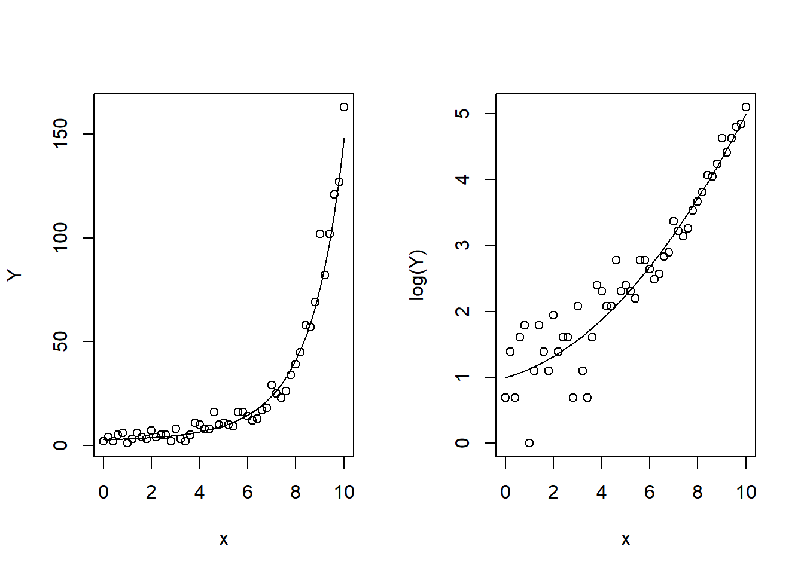

set.seed(123) # make it reproducible
x <- seq(0, 10, 0.2) # 51 values
# model matrix
X <- cbind(1, x, x^2)
beta <- c(1, 0.1, 0.03)
# eta <- beta[1] + beta[2]*x + beta[3]*x^2
# in matrix form:
eta <- X %*% beta
# log link, i.e. inverse is exponential
mu <- exp(eta)
Y <- rpois(length(mu), mu)Crossvalidating a Bayesian model
Which covariates matter?
Example: simulated Poisson data
Often, we have data with covariates that do not really contribute to the explanation. Consider the following situation:
We have count data \(y_i\) that supposedly come from a Poisson model, where the parameter depends on a covariate \(x_i\) in that the linear predictor is a polynomium of \(x_i\). We want to find the polynomium that best fits the data, but don’t know the degree og the polynomium.
Assuming a canonical (log) link, the model formally reads: \[ Y_i \sim \mathrm{Poisson}(\mu_i),\quad\mu_i=\mathbb{E}Y_i = \exp(\eta_i),\quad\eta_i=\beta_1 +\beta_2x_i +\beta_3 x_i^2+\dots+\beta_p x_i^{p-1}. \] The code below simulates a example with quadratic polynomial, so \(p=3\), where I chose \(\boldsymbol{\beta}=(1, 0.1, 0.03)\), \(n=51\) and \(\boldsymbol{x} = 0, 0.2, \dots, 10\):
Visualize the data, together with \(\mu\):
par(mfrow = c(1,2))
plot(x, Y)
lines(x, mu)
# plot log(Y) and log(mu) against x to show the form of function eta(x)
plot(x, log(Y))
lines(x, log(mu))
Now I want to analyze the data in a Bayesian way and look at the predicted \(\hat{Y}_i\). In order to find out the degree of the polynomial, I will apply models with different degree, that is, varying \(p\). To this end, I wrap the whole analysis into a function. This function takes the data, and a vector of \(x\)-values where we want to make the prediction. Thus, we can use the function later for cross validation.
library(rjags)Loading required package: codaLinked to JAGS 4.3.1Loaded modules: basemod,bugsPoissonPolynomial_predict <- function(Y, x, x_pred = x, p=3,
truebeta = beta, # for initialization
quiet = TRUE){
model_string <-"model{
# Likelihood
for (i in 1:n){
Y[i] ~ dpois(mu[i])
log(mu[i]) <- inprod(X[i, ], beta[])
}
# Priors
for (j in 1:p) {beta[j] ~ dnorm(0, .01)}
# Y hat values: posterior means for prediction matrix
for (i in 1:n_pred){
Yhat[i] <- exp(inprod(X_pred[i, ], beta[]))
}
}"
# make matrix of x^0, x^2, ..., x^{p-1}
X <- t(sapply(x, function(z) z^(1:p -1)))
X_pred <- t(sapply(x_pred, function(z) z^(1:p -1)))
if (p <= length(truebeta)) beta_init <- truebeta[1:p]
if (p > length(truebeta)) beta_init <- c(truebeta, rep(0, p - length(truebeta)))
model <- jags.model(textConnection(model_string),
data = list(Y = Y, X = X, X_pred =X_pred,
p = p, n = length(Y),
n_pred = length(x_pred)),
inits = list(beta = beta_init),
n.chains = 1,
quiet = quiet)
# burn in - should not be necessary since we cheat by starting with true values
update(model, 1000, progress.bar = "none")
# want to know the predicted lambda = Yhat
samples <- coda.samples(model,
variable.names = c("Yhat"),
n.iter = 5000,
progress.bar = "none")
# get posterior values
mu_post <- samples[[1]] # a S x n matrix
# return posterior mean
apply(mu_post, 2, mean)
}The next function is for conveniently printing goodness-of-fit statistics, MSE, MAD and LS. I exluded BIAS, because it does not give much information in our case.
goodfits <- function(Yobs, mu_hat){
Y_hat = mu_hat # easy here: just another name
c(
MSE = sum((Y_hat - Yobs)^2),
# BIAS = sum(Y_hat - Yobs), gives not much information in this case: dropped it
MAD = sum(abs(Y_hat - Yobs)),
LS = sum(dpois(Yobs, mu_hat, log = TRUE))
)
}Try out some polynomials of different degree:
Yhat2 <- PoissonPolynomial_predict(Y, x, p=2)
Yhat3 <- PoissonPolynomial_predict(Y, x, p=3)
Yhat4 <- PoissonPolynomial_predict(Y, x, p=4)
Yhat5 <- PoissonPolynomial_predict(Y, x, p=5)
goodfits(Y, Yhat2) MSE MAD LS
3409.6358 273.6788 -164.8036 goodfits(Y, Yhat3) MSE MAD LS
1166.1000 158.4484 -135.1417 goodfits(Y, Yhat4) MSE MAD LS
1163.3196 157.2615 -135.2110 goodfits(Y, Yhat5) MSE MAD LS
1173.1530 153.3836 -134.6305 For all criteria, we can see a big difference between a merely linear model (\(p=2\)) and the quadratic model (\(p=3\)), but increasing the degree of the polynomium further does not give big changes anymore.
Here, we have used the same data for Bayesian model fitting and for assessing the goodness of fit. This is not good practice (why?), therefore we try crossvalidation instead.
# ================ Cross validation "by hand" ===================
# select K groups of roughly same size
make_groups <- function(n, K = n, random = TRUE){
# group size n_i : a vector of K elements
# first K mod n groups are a bit larger
nrep <- (n-1) %/% K + 1
# number of necessary replications. E.g. if K=3, and n=8, need 3 replications
g_i <- as.factor(rep(1:K, nrep)[1:n])
# check it with table(g_i)
# if random, shuffle group allocation of individuals,
# and return the shuffled values
# otherwise just return g_i
if (random) sample(g_i) else g_i
}
# a function for crossvalidation in our polynomial Poisson example
crossvalidate <- function(Y, x, p = 3, K = length(Y), randomgroups = TRUE){
stopifnot(K > 1) # only a check if there is a wrong input value
n <- length(Y)
groups <- make_groups(n, K, randomgroups)
Yhat <- numeric(n)
for (k in 1: K){
testset <- groups == k
training <- !testset
Yhat[testset] <- PoissonPolynomial_predict(Y[training], x[training],
x[testset], p=p)
}
Yhat
}
Yha2 <- crossvalidate(Y, x, K=5, p = 2)
Yha3 <- crossvalidate(Y, x, K=5, p = 3)
Yha4 <- crossvalidate(Y, x, K=5, p = 4)
Yha5 <- crossvalidate(Y, x, K=5, p = 5)
goodfits(Y, Yha2) MSE MAD LS
4702.9006 304.0102 -172.1879 goodfits(Y, Yha3) MSE MAD LS
1198.0873 159.2673 -135.9612 goodfits(Y, Yha4) MSE MAD LS
1657.4042 183.1803 -139.4408 goodfits(Y, Yha5) MSE MAD LS
3024.9446 205.5952 -141.9212 Now, the case \(p=3\) performs clearly better than \(p=4\) or \(p=5\).
🤔 Do you have an explanation for that?